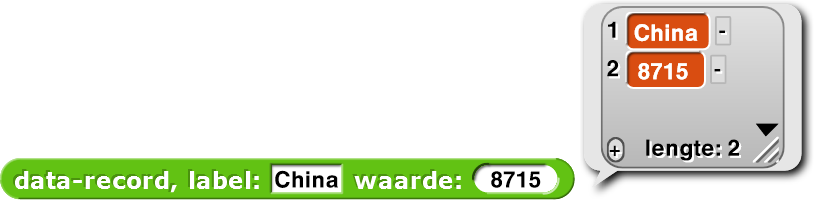

Staafdiagrammen maken
In deze les leer je een datavisualisatie-tool maken met staafdiagrammen voor
verschillende datasets. Je past abstractie en map, een functie van hogere
orde, toe.


-
 Technologie heeft overal ter wereld geleid tot milieuvervuiling. Bekijk samen de gegevens op deze link(Engels).
Technologie heeft overal ter wereld geleid tot milieuvervuiling. Bekijk samen de gegevens op deze link(Engels). - Welke landen hebben de hoogste uitstoot van koolstofdioxide (CO2)?
- Welke landen hebben de hoogste uitstoot CO2 per capita (per persoon) ?
- Welke van deze metingen is volgens jou een betere indicator voor de bijdrage van een land aan de wereldwijde milieuvervuiling?
Je kan kennis en inzicht vergaren door met anderen te praten en door vragen en hypotheses te stellen. -
 Dit bestand bevatBekijk de blokken die al voor je gemaakt zijn en probeer te begrijpen hoe ze werken.
Dit bestand bevatBekijk de blokken die al voor je gemaakt zijn en probeer te begrijpen hoe ze werken.- Een maker van een nieuwe ADT (Abstracte Datatype)
data-recordmet twee invoerveldenlabelenwaarde.
 - Twee kiezers voor de nieuwe ADT, om specifieke gegevens uit
data-recordte halen.

- Een
max van lijstrapporteur die het grootste element van de lijst vindt.
- Een maker van een nieuwe ADT (Abstracte Datatype)
- Ontwikkel code voor het
teken assenblok. Het moet de horizontale en verticale assen tekenen, gebaseerd op de gegeven coördinaten van x0 en y0 en de gegeven lengte- en hoogteinformatie.

Dit diagram kan je helpen om te begrijpen hoe de gegeven informatie bepaalt hoe en waar de horizontale en verticale assen getekend worden. Omdat je alleen positieve waardes in de grafiek zet raken de assen elkaar in de linkeronder hoek. Die hoek heet de oorsprong en heeft als coördinaten (x0,y0) zoals je kan zien in het diagram. Er moeten op dit moment nog geen labels of markeringen zijn.Zorg er ook voor in het

teken assenblok dat de coördinaten van de oorsprong in globale variabelen x-oorsprong en y-oorsprong opgeslagen worden. In de komende stappen van dit project gaan andere blokken deze informatie gebruiken om de staven en labels goed te plaatsen.


- Bekijk het normale
labelblok dat inbegrepen zit bij het startproject. Je moet waarschijnlijk bij het Instellingen-menu ( ) "JavaScript
extensions" aanzetten. Probeer te kijken of je de locatie en richting van de teken-sprite kan
veranderen.
) "JavaScript
extensions" aanzetten. Probeer te kijken of je de locatie en richting van de teken-sprite kan
veranderen.
 Merk op dat het
Merk op dat hetlabelblok geenpen neernodig heeft om te schrijven. Als jepen neeraan hebt staan bij hetlabelblok, krijg je misschien ongewenste effecten.
Je hoeft niet in hetlabelblok te kijken, maar als je dat doet, zie je iets onbekends.
Laat meer informatie zien.
Net als bijna alles in je browser is Snap! geschreven in de programmeertaal JavaScript. Hetlabelblok is geïmplementeerd met gebruik van een Snap!JavaScript-functieblok. Met hetJavaScript-functieblok kunnen ervaren programmeurs Snap! uitbreiden door nieuwe blokken te schrijven in JavaScript.
Je hoet niet te weten hoe het
labelblok werkt om het te gebruiken. Doordat het de inhoudelijke complexiteit verbergt van de gebruiker is hetlabelblok een perfect voorbeeld van abstractie. -
Maak het uitgebreidere
labelblok af, degene met een invoerveld voor de richting. Het hoort exact te werken zoals het simpelelabelblok, het kan alleen ook de richting van het label bepalen. De richting van het label is gelijk aan de richting van de sprite die het label tekent, dus door de richting van de sprite aan te passen kan je die van het label aanpassen.


De invoer voor de richting van hetlabelblok moet Snap! 's conventie voor richtingen volgen. Het volgt de wijzers van de klok alleen gaat het in plaats van 0 tot 12 van 0 tot 360. (0o omhoog, 90o rechts, 180o omlaag, 270o links). Test je nieuwelabelmet deze vier richtingen en controleer dat je het resultaat eruit ziet als de linkerhelft van de afbeelding hieronder.

-
Ontwikkel code voor het
teken staafblok. Het moet een verticale staaf (een lijn met de gegeven breedte en hoogte) tekenen vanaf de huidige locatie met een label onder de staaf.

 Je wil misschien weer even naar je eerdere Bakstenen muur project kijken om te herhalen hoe je staven van een gegeven dikte kan tekenen met de pen. Je hoeft niet het
Je wil misschien weer even naar je eerdere Bakstenen muur project kijken om te herhalen hoe je staven van een gegeven dikte kan tekenen met de pen. Je hoeft niet hetmaak einde van de lijnblok te importeren van dat project maar zorg ervoor dat "Rechte lijnuiteinden" geselecteerd is in het Instellingen-menu om rechte staven te tekenen. Je kan hieronder zien het verschil ziet als je "Rechte lijnuiteinden" aan zet.


-
Ontwikkel code voor het
teken stavenblok, dat een serie van gelabelde staven moet tekenen met een bepaalde breedte en hoogte. De serie moet links starten en doorgaan naar rechts. Om de staven en labels goed neer te zetten heb je waarschijnlijk de globale variabelen x-oorsprong en y-oorsprong nodig.

 Merk op dat door de maximale staafhoogte mee te geven, de hoogtes van alle staven berekend kunnen worden in proportie tot deze maximale staafhoogte. Met de berekening hieronder kan je de staafhoogte van ieder land berekenen: \frac{\text{staafhoogte land}}{\text{maximale staafhoogte}} = \frac{\text{datawaarde land}}{\text{maximale datawaarde}} Als de maximale staafhoogte bijvoorbeeld 240 is en je wil weten hoe hoog de staaf van de V.S. moet zijn, dan moet je eerste de hoogste waarde in de dataset vinden, dat is hier 8715 (van China). Daarna doe je de volgende berekening: {\text{staafhoogte V.S.}} = {\text{maximale staafhoogte}} \cdot \frac{\text{datawaarde V.S.}} {\text{maximale datawaarde}} = {\text{240}} \cdot \frac{\text{5491}}{\text{8715}}\approx {\text{151}} Om de maximale waarde te vinden, moet je eerst de lijst met waardes krijgen en dan het
Merk op dat door de maximale staafhoogte mee te geven, de hoogtes van alle staven berekend kunnen worden in proportie tot deze maximale staafhoogte. Met de berekening hieronder kan je de staafhoogte van ieder land berekenen: \frac{\text{staafhoogte land}}{\text{maximale staafhoogte}} = \frac{\text{datawaarde land}}{\text{maximale datawaarde}} Als de maximale staafhoogte bijvoorbeeld 240 is en je wil weten hoe hoog de staaf van de V.S. moet zijn, dan moet je eerste de hoogste waarde in de dataset vinden, dat is hier 8715 (van China). Daarna doe je de volgende berekening: {\text{staafhoogte V.S.}} = {\text{maximale staafhoogte}} \cdot \frac{\text{datawaarde V.S.}} {\text{maximale datawaarde}} = {\text{240}} \cdot \frac{\text{5491}}{\text{8715}}\approx {\text{151}} Om de maximale waarde te vinden, moet je eerst de lijst met waardes krijgen en dan hetmax van lijstblok gebruiken. Het blok hieronder gebruikt het blokwaarde van data-recordom een lijst met alle waardes uit data-lijst te halen.

-
Ontwikkel code voor het
label verticale asblok zodat het labels onder de verticale as zet, gebaseerd op bepaalde invoer. Voor het gemak mag je aannemen dat de labels de verticale as altijd in 10 gelijke delen splitst (met behulp van 11 markeringen) zoals hieronder:


-
Nu ben je klaar om alles samen te voegen en code te ontwikkelen voor het
Staafdiagramtekenblok met als invoer een datalijst. Bouw het blok hieronder en vul zelf de lege vakken in.
Je kan elk blok gebruiken dat je nodig hebt in de definitie vanStaafdiagram.
-
Als alles klaar is dan zou de volgende code, met een paar extra labels voor de diagramtitel, een
staafdiagram moeten produceren zoals hieronder:

Bedenk dat de laagste waarde op de verticale as nul moet zijn opdat het staafdiagram een correcte datavisualisatie is. Als je bijvoorbeeld de verticale as zou starten bij 5000 dan zou het lijken alsof China veel vervuilender is dan de V.S.
Over het algemeen moet je heel sceptisch zijn over diagrammen die niet starten bij nul.
-
Je programma moet algemeen genoeg zijn om ook bruikbaar te zijn voor een andere dataset. Er zit nog
een andere dataset in dit project genaamd "CO2 Uitstoot per capita":

 "per capita" betekent "per persoon". Om de uitstoot per capita te berekenen moet je dus de totale CO2-uitstoot delen door het aantal inwoners. Hieronder staat een voorbeeld met China:
"per capita" betekent "per persoon". Om de uitstoot per capita te berekenen moet je dus de totale CO2-uitstoot delen door het aantal inwoners. Hieronder staat een voorbeeld met China:
\frac{\text{8715 Miljoen ton}}{\text{1.337 Miljard personen}} = {\text{6.52 tonnen per persoon}} Deze waardes zijn al berekend in de datasetCO2 Uitstoot per capita Data.
-
Vergelijk samen met je partner de twee staafdiagrammen. Welk inzicht geeft ieder diagram over de
CO2-uitstoot? Is de een beter dan de ander?

-
Dataverwerking:
Kijk in het Variabelenpalet om het
Land-BBP-Bevolking Datablok te vinden. Als je naar de inhoud kijkt, vind je een lijst van lijsten met data over het BBP ( Bruto Binnenlands Product) en bevolkingsgrootte voor ieder land dat je hebt bestudeerd in dit project. Verwerk de data op een manier dat je er een staafdiagram mee kan maken met het BBP per capita voor ieder land.

Klik hier voor een hint over het snel verwerken van data met behulp van de functiemap.Deze blokken helpen misschien:

- Verzamel nu zelf data in je klas of van het internet over een onderwerp dat je interessant vindt en dat makkelijk gevisualiseerd kan worden in een staafdiagram. Gebruik je Snap!-programma om de data te visualiseren. Vertel wat je gedaan hebt aan je klasgenoten.
-
Soms is het handiger om je staafdiagram te presenteren met horizontale staven in plaats van
verticale. Pas je code aan zodat het een invoer neemt die het type diagram aangeeft (horizontaal of
verticaal) en ook zo'n soort diagram genereert.

-
Histogrammen laten numerieke data zien gegroepeerd in bereiken (vaal "bins" genoemd,
"emmers" in het Engels) en geplot als staven. Het histogram hieronder laat bijvoorbeeld het aantal
studenten zien in iedere leeftijdsgroep op een zomerkamp. Leer over histogrammen en maak een
datavisualisatie-programma in Snap! om histogrammen te laten zien.